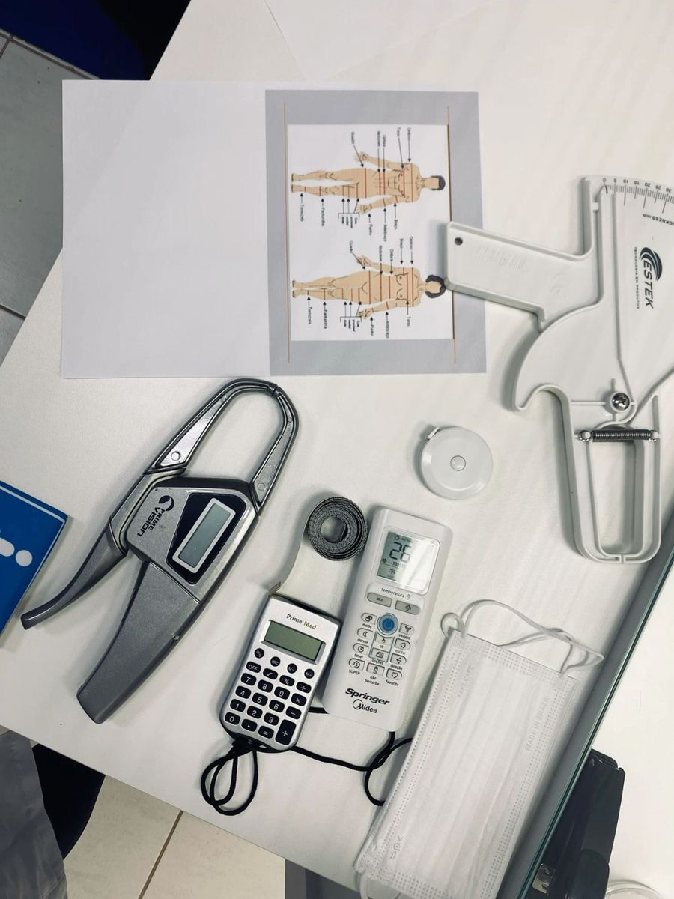
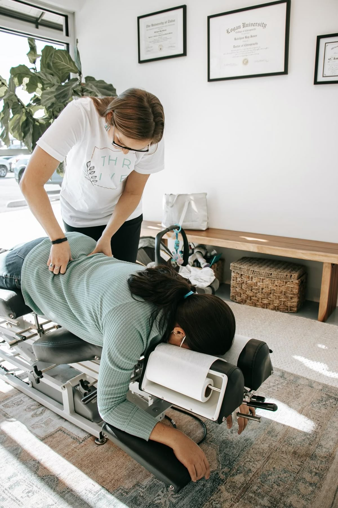

Medicina General
Atención médica de primer contacto, valoración general, seguimiento y control de padecimientos.
En Medicina Integral Leo ofrecemos atención profesional, humana y accesible para el bienestar integral de nuestros pacientes y sus familias. Nuestro objetivo es brindar servicios de salud con calidad, cercanía y confianza, en un solo lugar.
Brindar atención médica integral y multidisciplinaria con profesionalismo, empatía y calidad, contribuyendo al bienestar físico, emocional y preventivo de nuestros pacientes mediante servicios accesibles y confiables.
Ser un espacio de salud integral reconocido por su excelencia, trato humano y variedad de especialidades, convirtiéndonos en una opción confiable para las familias que buscan atención completa en un solo lugar.
Contamos con atención profesional en distintas áreas para acompañarte en el cuidado integral de tu salud.
Atención médica de primer contacto, valoración general, seguimiento y control de padecimientos.

Planes de alimentación personalizados, control de peso y orientación nutricional para todas las etapas de vida.
Acompañamiento emocional y terapéutico para fortalecer tu bienestar mental y tu calidad de vida.
Tratamiento y rehabilitación física orientada a mejorar movilidad, dolor y recuperación funcional.

Atención enfocada en el sistema musculoesquelético para mejorar postura, movilidad y bienestar corporal.
Cuidado integral de la salud bucal con atención profesional para prevención, diagnóstico y tratamiento.